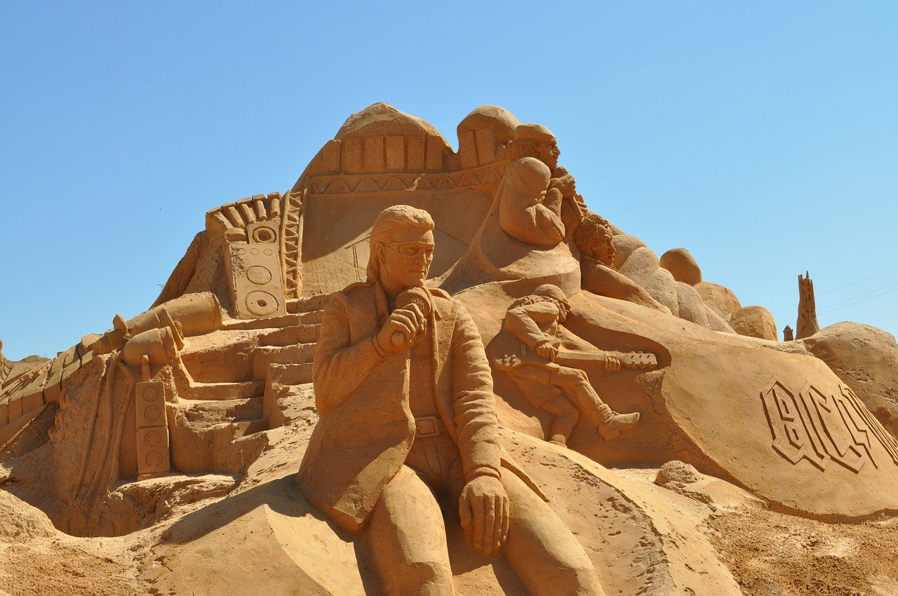
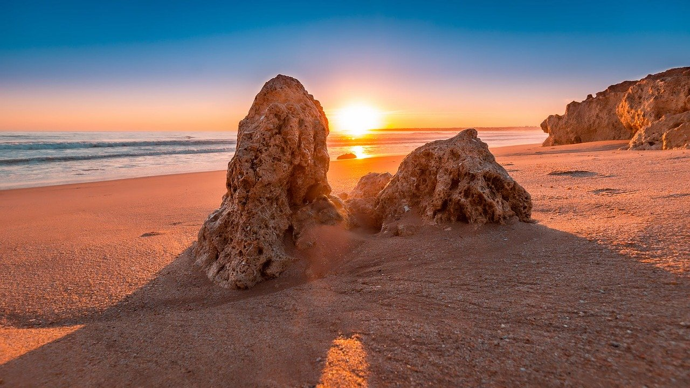
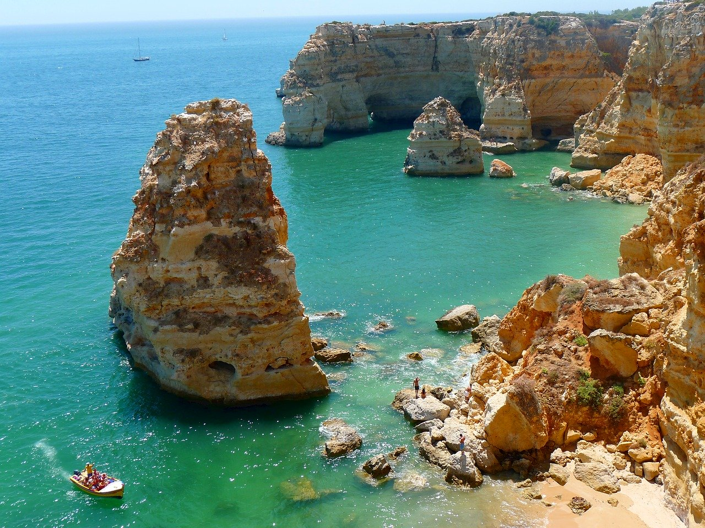
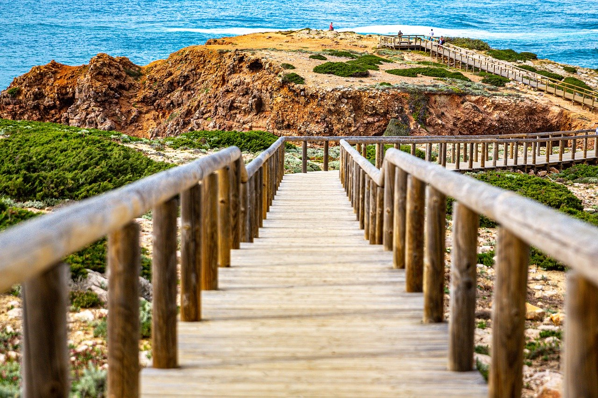
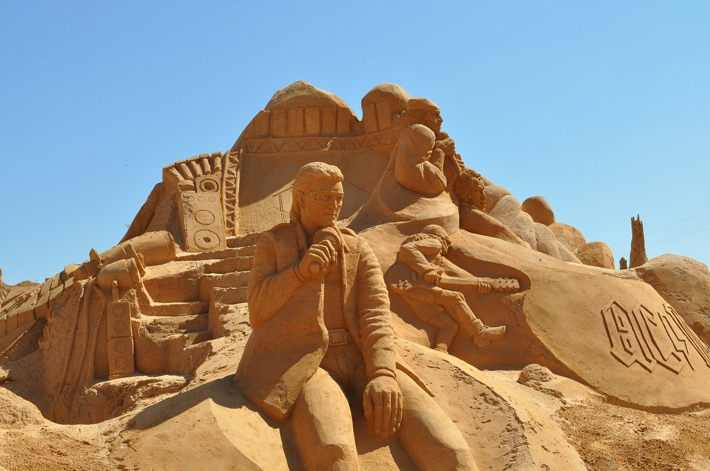
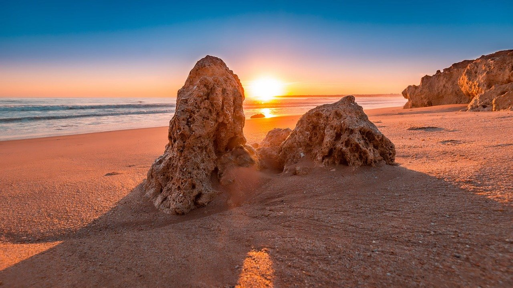
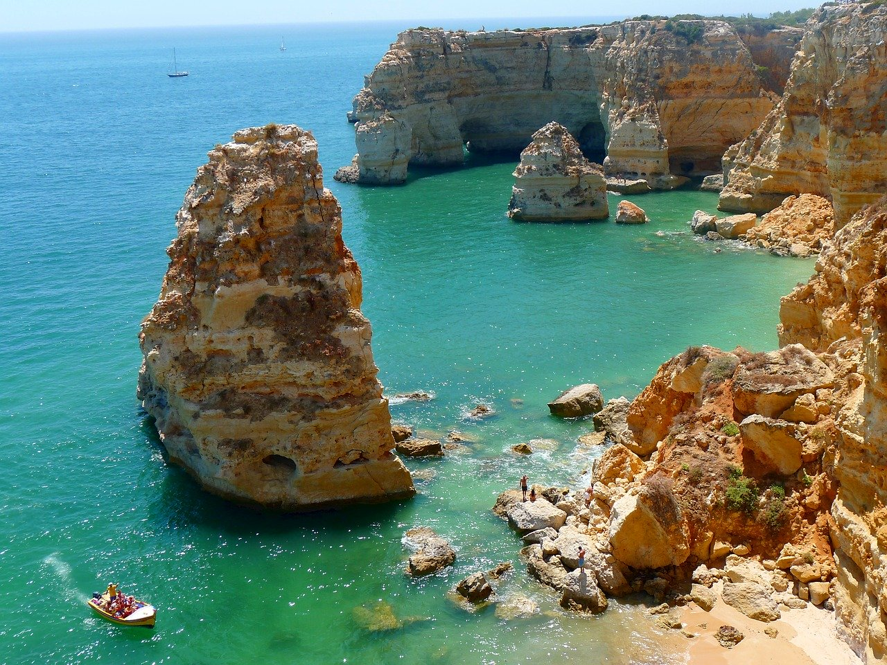
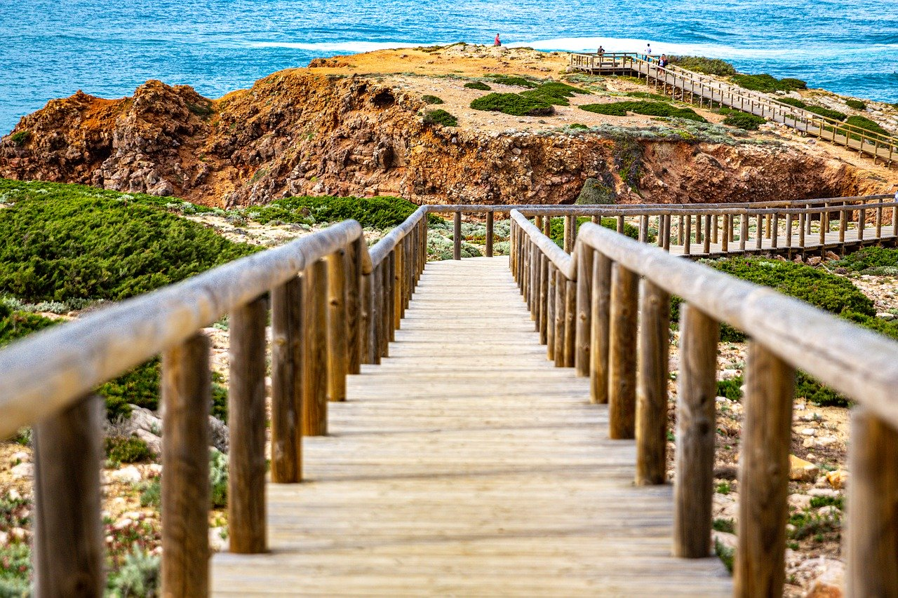

NATURE HOTSPOTS
Madeira
Right in the middle of the Atlantic, the islands of Madeira and Porto Santo are a haven of natural beauty. The exotic colours of the flowers stand out from among the blue sea and the emerald green vegetation; this is an archipelago where two thirds are a protected area and where the largest Laurisilva forest in the world is located.
Azores
Mother Nature has created a land full of natural beauty, ready to be explored, in the blue immensity of the Atlantic Ocean: the Azores. To the East, on the island of Santa Maria, the beaches of warm white sand are inviting, and the vineyards covering the slopes like an amphitheatre resemble giant staircases. São Miguel, the largest island, is seductive with its Sete Cidades and Fogo Lagoons. The power that emanates from the earth is felt in the geysers, hot thermal waters and volcanic lakes.
Algarve
There’s no shortage of high quality beaches either. Sandy stretches as far as the eye can see, framed by golden cliffs, virtually deserted islands marking the boundary between Ria Formosa and the sea, and small coves sheltered by the rocks. The ocean, in every shade of blue and mostly calm and warm, invites you for long swims and to indulge in water sports.
 






